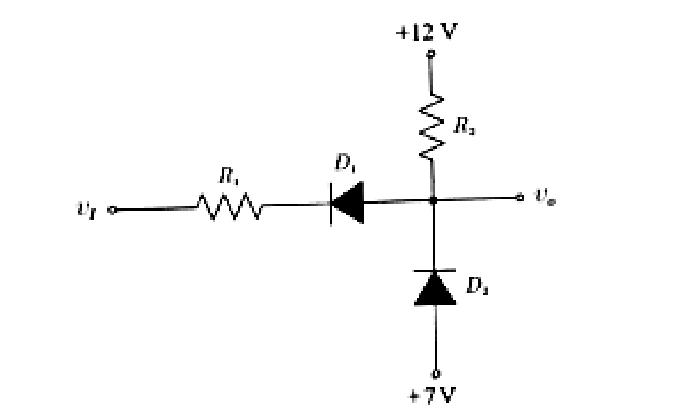
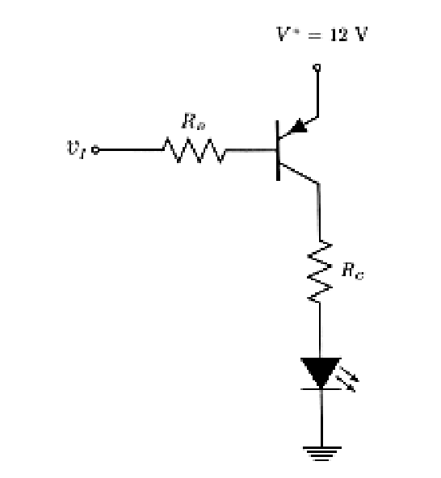
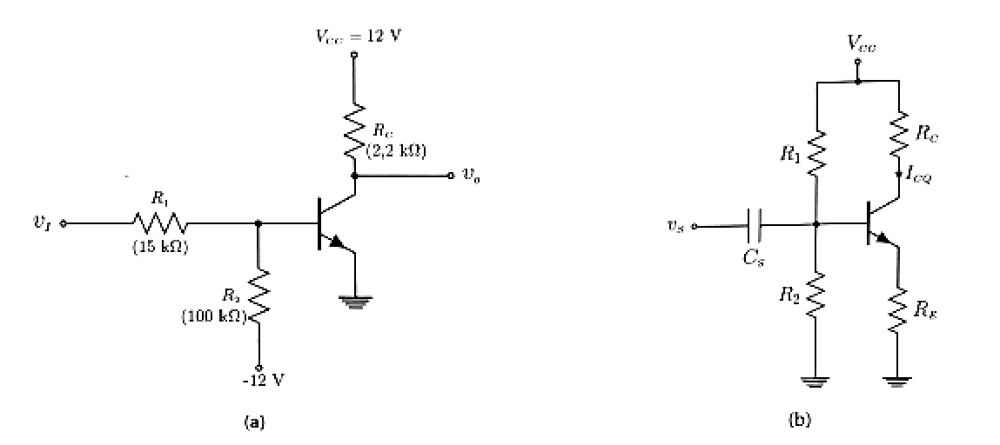
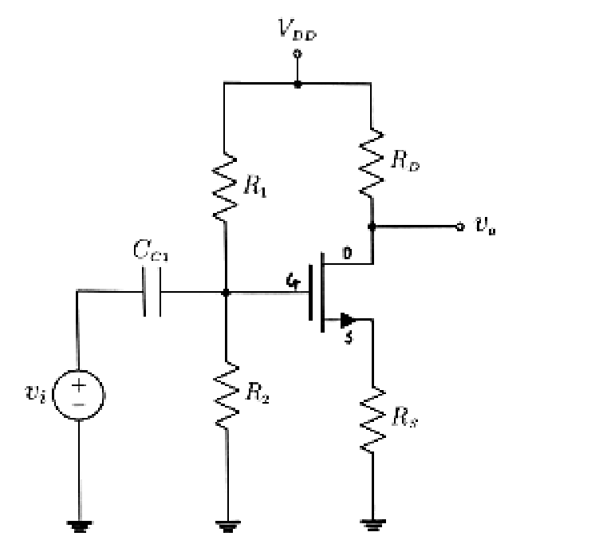
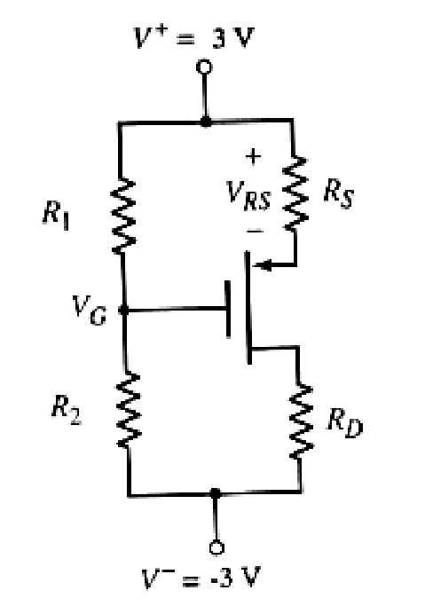

2025 Assessment 2, with a memo
The 2025 A2 paper: five questions, 90 marks. There is no official memo; this one was written for these notes, and every number in it was checked by calculation. Answer each question before you open its memo. Photos of the original paper are under Past papers.
00Instructions
- Answer all questions and show all working. The marks for each part are in brackets.
- Sketches need their key values and regions labelled, not exact scales.
Q1Diodes[28]
Explain why a reverse biased diode, for all practical purposes, does not conduct any current. Use sketches to help your explanation. Explain in terms of charge carrier movement both before and after the reverse bias voltage is applied.
Determine the increase in forward bias voltage required to increase the conduction current by a factor of 20 for a silicon pn junction diode at a temperature of 300 K. Assume the diode is strongly biased in the forward direction.
A diode is fabricated by doping intrinsic silicon with arsenic and gallium. Sketch the complete nonlinear diode I–V curve and the piecewise linear approximation on the same axes. Show both the forward bias and the reverse bias conditions. Indicate all important parameters on the sketch.
Draw a circuit that would clamp an input voltage signal of \(10\sin(\omega t)\) V to a minimum value of −2 V. Draw two cycles of the steady state input and output voltage waveforms versus time. Indicate any assumptions.
For the circuit shown in Figure 1, \(R_1 = 1\ \text{k}\Omega\) and \(R_2 = 10\ \text{k}\Omega\). Plot \(v_O\) for \(0 \le v_I \le 15\) V. Assume \(V_\gamma = 0.6\) V and \(r_f = 0\ \Omega\). Show all calculations and indicate all breakpoint values on the curve.

Memo for question 1
Approach. (a) and (c) are explanation and sketch: name the carriers and what the field does to them. (b) is the diode equation without the −1. (d) is a clamper: a series capacitor and a diode to a reference. (e) Work out which diodes conduct in each range of \(v_I\) and find where each one switches.
(a)Why reverse bias gives (almost) no current[4]
- 1
Before bias: majority carriers diffuse across the junction (holes into the n side, electrons into the p side). They leave a depletion region of fixed ions whose field pushes them back. In equilibrium this diffusion is balanced by drift, so the net current is zero.
- 1
Reverse bias (positive on the n side) adds to the built-in field: the depletion region widens and the potential barrier rises by the applied voltage.
- 1
Majority carriers now cannot climb the barrier, so the diffusion current falls to practically zero.
- 1
Only minority carriers (electrons on the p side, holes on the n side) that reach the edge are swept across by the field. There are very few, so this reverse saturation current \(I_S\) is tiny (about \(10^{-15}\) to \(10^{-12}\) A in silicon) and does not grow with the reverse voltage: for practical purposes no current flows.
The fixed ions (− on the p side, + on the n side) are the shaded region. Reverse bias uncovers more of them, widening it and strengthening the field, which stops the majority carriers (open circles: holes; dots: electrons) from crossing.
(b)Forward voltage for 20 times the current[5]
- 1
Strong forward bias: \(e^{V_D/V_T} \gg 1\), so \(I_D \approx I_S e^{V_D/V_T}\).
- 1
Ratio of the two currents: \(\dfrac{I_{D2}}{I_{D1}} = e^{(V_{D2} - V_{D1})/V_T} = 20\); \(I_S\) cancels.
- 1
So \(\Delta V_D = V_T \ln 20\).
- 1
\(V_T = kT/e = (86.17 \times 10^{-6})(300) = 0.02585\) V.
- 1
\(\Delta V_D = 0.02585 \times 2.996 = 77.4\) mV (with \(V_T = 0.026\) V, 77.9 mV).
(c)I–V curve and piecewise-linear model[5]
- 1
Arsenic (group V) is a donor and gallium (group III) an acceptor, so the regions doped with each form a silicon pn junction diode.
- 1
Forward bias: the current is negligible until about \(V_\gamma \approx 0.7\) V, then rises exponentially, \(i_D = I_S(e^{v_D/V_T} - 1)\).
- 1
Reverse bias: a tiny, constant current \(-I_S\), until breakdown at \(-V_Z\), where the current rises sharply in the reverse direction.
- 1
Piecewise-linear model: zero current for \(v_D \lt V_\gamma\), then a straight line of slope \(1/r_f\) (forward resistance).
- 1
Label on the sketch: \(V_\gamma\), \(r_f\) (slope), \(I_S\), \(V_Z\), and which side is forward and reverse bias.
The reverse current and the breakdown region are exaggerated so that they show; in reality \(I_S\) is many orders of magnitude below the forward current.
(d)Clamping to a minimum of −2 V[5]
- 1
Circuit: \(v_I\) through a series capacitor \(C\) to \(v_O\); a diode from \(v_O\) to a reference, cathode at \(v_O\), so it conducts whenever \(v_O\) tries to fall below the reference.
- 1
Assume an ideal diode (\(V_\gamma = 0\)) and no load (or a load with \(RC\) much longer than the period), so the capacitor never discharges. Then the reference is \(V_B = -2\) V: a 2 V battery with its + terminal to ground. With \(V_\gamma = 0.7\) V use a 1.3 V battery instead.
- 1
On the first negative peak the diode conducts and charges \(C\) to \(v_C = -10 - (-2) = -8\) V (left plate negative), after which the diode stays off.
- 1
Steady state: \(v_O = v_I - v_C = 10\sin(\omega t) + 8\) V: the same sine, shifted up by 8 V.
- 1
Waveforms: \(v_I\) from −10 V to +10 V; \(v_O\) from −2 V to +18 V, two cycles each.
The diode connects the output to −2 V. It conducts only at the negative peak, topping up the capacitor; otherwise the capacitor holds 8 V and simply adds it to the input.
The output keeps the input's shape and amplitude; only its DC level changes, so its minimum sits at the −2 V reference.
(e)Transfer curve of the two-diode circuit[9]
- 1
Large \(v_I\): \(D_1\) off (no current through \(R_1\)), and \(R_2\) pulls \(v_O\) up to 12 V, which reverse biases \(D_2\) (its anode is at 7 V). So \(v_O = 12\) V.
- 1
\(D_1\) turns on when \(v_O - v_I = 0.6\) V, that is at \(v_I = 12 - 0.6 = 11.4\) V.
- 1
\(D_1\) on, \(D_2\) off: one loop through \(R_2\), \(D_1\) and \(R_1\): \(I = \dfrac{12 - 0.6 - v_I}{R_1 + R_2} = \dfrac{11.4 - v_I}{11\ \text{k}\Omega}\).
- 1
\(v_O = 12 - IR_2 = 12 - \tfrac{10}{11}(11.4 - v_I)\): a straight line of slope \(10/11 = 0.909\).
- 1
\(D_2\) turns on when \(v_O\) falls to \(7 - 0.6 = 6.4\) V.
- 1
\(12 - \tfrac{10}{11}(11.4 - v_I) = 6.4\) gives \(11.4 - v_I = 6.16\), so \(v_I = 5.24\) V.
- 1
Below that, \(D_2\) holds \(v_O = 6.4\) V. Check both diodes conduct: \(I_{D1} = \dfrac{6.4 - 0.6 - v_I}{1\ \text{k}\Omega} = 5.8 - v_I\) mA > 0, and \(I_{D2} = I_{D1} - \dfrac{12 - 6.4}{10\ \text{k}\Omega} = 5.24 - v_I\) mA > 0 for \(v_I \lt 5.24\) V.
- 1
Breakpoints: \((5.24\ \text{V}, 6.4\ \text{V})\) and \((11.4\ \text{V}, 12\ \text{V})\). For example at \(v_I = 8\) V, \(v_O = 8.91\) V.
- 1
Plot: flat at 6.4 V, a line of slope 10/11 between the breakpoints, flat at 12 V, with the diode states marked.
D₂ clamps the output at 6.4 V from below and R₂ pulls it to 12 V from above; in between, D₁ and the two resistors form a divider from 11.4 V.
Q2LED switch[12]
The switching circuit in Figure 2 drives a light emitting diode (LED). For the transistor \(\beta = 100\), \(V_{EB(on)} = 0.7\) V and \(V_{EC(sat)} = 0.2\) V. The LED works best at a current of 10 mA, with \(V_\gamma = 1.8\) V.

Calculate \(R_C\) and \(R_B\). Make sure that the transistor is driven deep into saturation by choosing the input current double the minimum required value.
At what value of \(v_I\) will the transistor switch off?
Draw the load line sketch of the switch and show the static operating point (Q-point) when the transistor is in saturation. Also give numerical values for the Q-point and the intercepts on the axes.
Memo for question 2
Approach. In saturation the collector loop fixes \(R_C\). The base current at the edge of saturation is \(I_C/\beta\); doubling it and taking the input low (0 V) fixes \(R_B\). The paper does not give the on-state input; 0 V (logic low) is assumed.
(a)\(R_C\) and \(R_B\)[5]
- 1
Collector loop in saturation: \(12 = V_{EC(sat)} + I_C R_C + V_\gamma\).
- 1
\(R_C = \dfrac{12 - 0.2 - 1.8}{10\ \text{mA}} = 1.0\ \text{k}\Omega\).
- 1
Minimum base current for 10 mA: \(I_{B(min)} = I_C/\beta = 10/100 = 0.1\) mA. Double it: \(I_B = 0.2\) mA.
- 1
Base loop with \(v_I = 0\) V (switch on): \(12 = V_{EB(on)} + I_B R_B + v_I\).
- 1
\(R_B = \dfrac{12 - 0.7 - 0}{0.2\ \text{mA}} = 56.5\ \text{k}\Omega\) (a standard 56 kΩ gives 0.202 mA).
(b)Switch-off input[1]
- 1
The base current stops when \(V_{EB}\) falls below 0.7 V: \(v_I \ge 12 - 0.7 = 11.3\) V.
(c)Load line and Q-point[6]
- 1
Load line from the collector loop (LED on): \(V_{EC} = 12 - 1.8 - I_C R_C = 10.2 - I_C(1\ \text{k}\Omega)\).
- 1
\(I_C\) intercept (\(V_{EC} = 0\)): \(10.2\) mA.
- 1
\(V_{EC}\) intercept (\(I_C = 0\)): 10.2 V, the cutoff end. (With no current the LED drops less than 1.8 V, so in practice \(V_{EC}\) can rise towards 12 V.)
- 1
Q-point in saturation: \(V_{EC} = 0.2\) V, \(I_C = (10.2 - 0.2)/1\ \text{k}\Omega = 10\) mA.
- 1
In saturation \(I_C = 10\) mA is less than \(\beta I_B = 20\) mA: the forced \(\beta\) is 50, half of 100, so the transistor is deep in saturation.
- 1
Sketch: the line between the intercepts, with the Q-point at its upper end and the cutoff point at its lower end; the switch moves between the two.
The switch moves along the line between cutoff (LED off) and the saturation Q-point, where the LED carries its 10 mA.
Q3Common-emitter circuits[20]

For the transistor in Figure 3(a), \(\beta = 80\), \(V_{BE(on)} = 0.7\) V and \(V_{CE(sat)} = 0.2\) V. Sketch the transfer curve of the circuit (\(v_O\) against \(v_I\)) for \(0 \le v_I \le 5\) V. Tip: consider using Thevenin.
A transistor circuit is shown in Figure 3(b). Show that, for typical bipolar transistor parameters, if \(R_1 \parallel R_2 \approx 0.1\beta R_E\), the collector current becomes relatively insensitive to changes in \(\beta\).
Memo for question 3
Approach. (a) Replace \(v_I\), \(R_1\), \(R_2\) and −12 V by a Thevenin source; then find where the transistor turns on and where it saturates. (b) Write \(I_C\) for the divider-biased stage and show the \(\beta\) in it nearly cancels.
(a)Transfer curve[10]
- 1
Thevenin at the base: \(V_{TH} = \dfrac{100 v_I + 15(-12)}{115} = \dfrac{100 v_I - 180}{115}\).
- 1
\(R_{TH} = 15 \parallel 100 = 13.043\ \text{k}\Omega\).
- 1
Cutoff while \(V_{TH} \le 0.7\) V: \(100v_I - 180 \le 80.5\), so \(v_I \le 2.605\) V, and \(v_O = 12\) V.
- 1
Forward active: \(I_B = \dfrac{V_{TH} - 0.7}{R_{TH}}\), \(I_C = 80 I_B\).
- 1
\(v_O = 12 - 2.2\ \text{k}\Omega \cdot I_C\).
- 1
Slope: \(\dfrac{dv_O}{dv_I} = -\dfrac{\beta R_C}{R_{TH}}\cdot\dfrac{100}{115} = -\dfrac{80(2.2)}{13.043}(0.8696) = -11.73\).
- 1
Saturation edge: \(v_O = 0.2\) V, so \(I_C = 11.8/2.2 = 5.364\) mA and \(I_B = 67.0\ \mu\text{A}\).
- 1
\(V_{TH} = 0.7 + (0.06705\ \text{mA})(13.043\ \text{k}\Omega) = 1.575\) V.
- 1
\(v_I = \dfrac{115 V_{TH} + 180}{100} = 3.61\) V. Above this the transistor is saturated and \(v_O = 0.2\) V.
- 1
Sketch: 12 V to the first breakpoint, a straight fall to 0.2 V, then flat to 5 V, with the three modes labelled.
The −12 V supply through R₂ holds the base below 0.7 V until the input passes 2.6 V. The active region is only 1 V wide, so the circuit behaves as an inverter.
(b)Why \(R_{TH} \approx 0.1\beta R_E\) makes \(I_C\) insensitive to \(\beta\)[10]
- 1
Replace the divider by its Thevenin equivalent: \(V_{TH} = \dfrac{R_2}{R_1 + R_2}V_{CC}\), \(R_{TH} = R_1 \parallel R_2\).
- 1
KVL round the base-emitter loop: \(V_{TH} = I_B R_{TH} + V_{BE(on)} + I_E R_E\).
- 1
With \(I_E = (1+\beta)I_B\): \(I_B = \dfrac{V_{TH} - V_{BE(on)}}{R_{TH} + (1+\beta)R_E}\).
- 1
So \(I_C = \beta I_B = \dfrac{\beta(V_{TH} - V_{BE(on)})}{R_{TH} + (1+\beta)R_E}\).
- 1
If \((1+\beta)R_E \gg R_{TH}\): \(I_C \approx \dfrac{\beta}{1+\beta}\cdot\dfrac{V_{TH} - V_{BE(on)}}{R_E} \approx \dfrac{V_{TH} - V_{BE(on)}}{R_E}\), which does not contain \(\beta\).
- 1
With \(R_{TH} = 0.1\beta R_E\): \(I_C = \dfrac{\beta}{1.1\beta + 1}\cdot\dfrac{V_{TH} - V_{BE(on)}}{R_E}\).
- 1
For typical \(\beta\) of 100 to 200 the factor is 0.9009 to 0.9050: doubling \(\beta\) changes \(I_C\) by only 0.45 %.
- 1
Sensitivity: \(\dfrac{\beta}{I_C}\dfrac{dI_C}{d\beta} = \dfrac{R_{TH} + R_E}{R_{TH} + (1+\beta)R_E} = \dfrac{0.1\beta + 1}{1.1\beta + 1} = 0.099\) at \(\beta = 100\): a 1 % change in \(\beta\) gives about a 0.1 % change in \(I_C\).
- 1
Compare a base resistor with no \(R_E\): \(I_C = \beta I_B\), sensitivity 1, so \(I_C\) doubles when \(\beta\) doubles.
- 1
Why not make \(R_{TH}\) even smaller? It would draw more current from \(V_{CC}\) and load the input signal; \(0.1\beta R_E\) is the usual compromise between stability and input resistance.
Q4Common-source amplifier[20]
For the NMOS common-source amplifier in Figure 4, \(V_{TN} = 0.8\) V, \(K_n = 1\ \text{mA/V}^2\) and \(\lambda = 0\). The circuit parameters are \(V_{DD} = 5\) V, \(R_S = 1\ \text{k}\Omega\), \(R_D = 4\ \text{k}\Omega\) and \(R_2 = 175\ \text{k}\Omega\).

Draw the load line sketch for the amplifier.
Determine the values \(V_{DSQ}\), \(I_{DQ}\) and \(V_{GSQ}\) so that the Q-point will be in the middle of the undistorted working range of the amplifier, that is, design for optimum output voltage swing. Calculate the value of \(R_1\) that will set the Q-point at the determined values.
Memo for question 4
Approach. The undistorted range is the saturation region: from cutoff (\(I_D = 0\)) up the load line to where it meets the saturation edge \(I_D = K_n V_{DS}^2\). Put the Q-point halfway between, then work back through \(V_{GS}\) and \(V_G\) to \(R_1\).
(a)Load line[6]
- 1
KVL round the drain-source loop: \(V_{DS} = V_{DD} - I_D(R_D + R_S) = 5 - I_D(5\ \text{k}\Omega)\).
- 1
Intercepts: \(I_D = 1\) mA at \(V_{DS} = 0\), and \(V_{DS} = 5\) V at \(I_D = 0\) (cutoff).
- 1
The saturation edge \(V_{DS} = V_{GS} - V_{TN}\) is the curve \(I_D = K_n V_{DS}^2\); left of it the transistor is non-saturated (the amplifier distorts).
- 1
Where they meet: \(\dfrac{5 - V_{DS}}{5} = V_{DS}^2\), so \(5V_{DS}^2 + V_{DS} - 5 = 0\).
- 1
\(V_{DS} = \dfrac{-1 + \sqrt{1 + 100}}{10} = 0.905\) V, \(I_D = 0.819\) mA: the transition point.
- 1
Sketch: the load line, the saturation-edge parabola, the transition point and the cutoff point; the useful range is between them.
The output can swing only between the transition point (where the transistor leaves saturation) and cutoff at 5 V. The Q-point is halfway between them.
(b)Q-point for maximum swing, and \(R_1\)[14]
- 1
Middle of the undistorted range: halfway between the transition point and cutoff.
- 1
\(V_{DSQ} = \dfrac{0.905 + 5}{2} = 2.952\) V.
- 1
\(I_{DQ} = \dfrac{5 - V_{DSQ}}{5\ \text{k}\Omega} = 0.4095\) mA (half the transition current).
- 1
The swing is \(\pm2.048\) V each way about \(V_{DSQ}\).
- 1
Saturation: \(I_{DQ} = K_n(V_{GSQ} - V_{TN})^2\).
- 1
\(V_{GSQ} - 0.8 = \sqrt{0.4095/1} = 0.6399\) V.
- 1
\(V_{GSQ} = 1.440\) V.
- 1
Check saturation: \(V_{DSQ} = 2.952\) V \(\ge V_{GSQ} - V_{TN} = 0.640\) V.
- 1
Gate voltage: \(V_G = V_{GSQ} + I_{DQ}R_S\).
- 1
\(V_G = 1.440 + (0.4095)(1) = 1.849\) V.
- 1
No gate current, so the divider sets it: \(V_G = \dfrac{R_2}{R_1 + R_2}V_{DD}\).
- 1
\(R_1 = R_2\left(\dfrac{V_{DD}}{V_G} - 1\right) = 175\left(\dfrac{5}{1.849} - 1\right)\).
- 1
\(R_1 = 298.1\ \text{k}\Omega\).
- 1
Check: \(\dfrac{175}{298.1 + 175}(5) = 1.849\) V, as required.
Q5PMOS bias[10]
In the circuit of Figure 5, \(R_1 = 7.5\ \text{k}\Omega\), \(R_2 = 15\ \text{k}\Omega\), \(R_S = 500\ \Omega\) and \(R_D = 2.2\ \text{k}\Omega\). The transistor parameters are \(V_{TP} = -1.2\) V and \(K_p = 0.75\ \text{mA/V}^2\).

Calculate \(I_{DQ}\), \(V_{SGQ}\) and \(V_{SDQ}\).
Memo for question 5
Approach. The divider fixes \(V_G\). Assume saturation, write \(V_{SG}\) in terms of \(I_D\) through \(R_S\), and solve the quadratic; keep the root that leaves the transistor on, then check saturation.
(a)\(I_{DQ}\), \(V_{SGQ}\), \(V_{SDQ}\)[10]
- 1
Gate: \(V_G = -3 + \dfrac{R_2}{R_1 + R_2}(6) = -3 + \dfrac{15}{22.5}(6) = 1.00\) V.
- 1
Source: \(V_S = 3 - I_D R_S\), so \(V_{SG} = V_S - V_G = 2 - 0.5I_D\) (\(I_D\) in mA).
- 1
Assume saturation: \(I_D = K_p(V_{SG} + V_{TP})^2 = 0.75(V_{SG} - 1.2)^2\).
- 1
Substitute: \(I_D = 0.75(0.8 - 0.5I_D)^2\), so \(0.1875I_D^2 - 1.6I_D + 0.48 = 0\).
- 1
\(I_D = \dfrac{1.6 \pm \sqrt{2.56 - 0.36}}{0.375}\): 0.3114 mA or 8.22 mA.
- 1
Reject 8.22 mA: it gives \(V_{SG} = -2.11\) V, below \(|V_{TP}|\), so the transistor would be off. \(I_{DQ} = 0.311\) mA.
- 1
\(V_{SGQ} = 2 - 0.5(0.3114) = 1.844\) V.
- 1
\(V_S = 3 - (0.3114)(0.5) = 2.844\) V and \(V_D = -3 + (0.3114)(2.2) = -2.315\) V.
- 1
\(V_{SDQ} = 2.844 - (-2.315) = 5.159\) V.
- 1
Check saturation: \(V_{SD} = 5.16\) V \(\ge V_{SG} + V_{TP} = 0.644\) V. It holds.